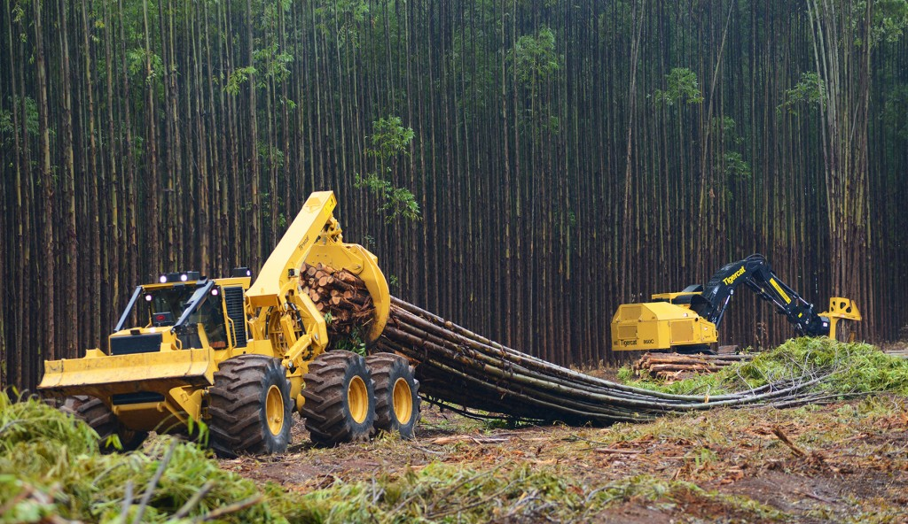
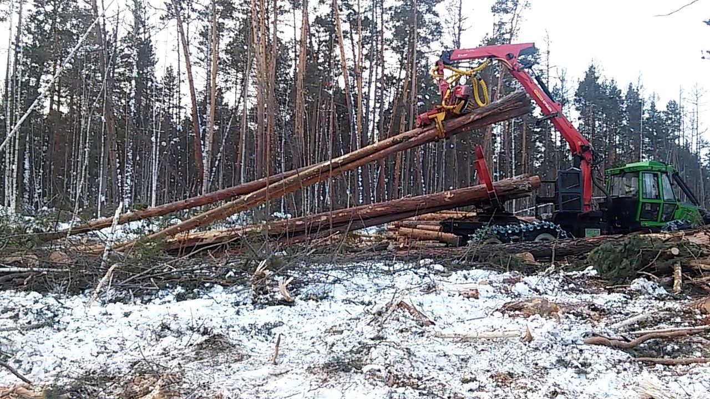

Хлыстовая технология заготовки древесины
Делянка разбивается на пасеки. Посередине каждой пасеки прокладывается волок. Разбивка на пасеки, отграничение пасечных и магистральных волоков, погрузочных площадок и других объектов производится с учетом характера размещения подроста и молодняка, ключевых элементов биоразнообразия и необходимости максимального их сохранения. Валку деревьев на волоке начинают с ближнего конца, деревья валят вершинами по направлению к погрузочной площадке. Вальщик валит деревья сначала с одной полупасеки; переходя от дерева к дереву, перемещается поперек полупасеки от волока к середине пасеки, а затем обратно. При этом он стремится валить каждое дерево так, чтобы как можно большая часть кроны попала на волок. При валке деревьев учитывается расположение подроста, ключевых элементов биоразнообразия. После отхода вальщика на расстояние более 50 м или после перехода его на другую пасеку приступают к обрубке сучьев или их обрезке. Сучья, обрубленные с той части кроны, которая находится над волоком, остаются на волоке. Сучья, обрубленные с крон, находящихся на пасеке, по существующим лесохозяйственным требованиям должны быть собраны. Одновременно обрубщики сучьев оправляют подрост. Сбор сучьев и оправка подроста производятся после трелевки хлыстов с данной площадки. Собранные сучья уплотняются при проходе трактора, трелюющего хлысты. Ширина волока не должна превышать 5 м. Бессистемная валка деревьев и трелевка древесины запрещается. Движение тракторов разрешается только по волокам. После окончания лесозаготовительных операций (летом вслед за окончанием, а после зимних работ — ранней весной) весь сохранившийся подрост, одновременно с доочисткой лесосек, должен быть обязательно оправлен силами и средствами лесозаготовителей путем освобождения его от порубочных остатков.
 1 страница 3 страница